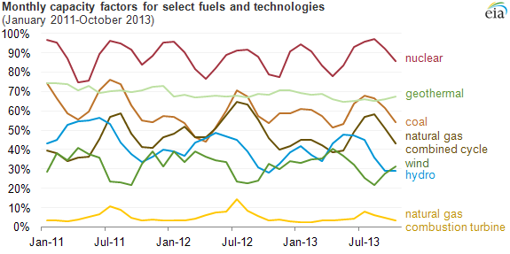

Figure 1: Tokyo, Japan. One of the most populous cities in the world, with roughly 30 million inhabitants. This translates to about 2100 GWh of electricity consumption. Image source: Kakidai, CC BY-SA 4.0 , via Wikimedia Commons
Once a fusion reactor is developed that consistently achieves breakeven, one of the next steps is to integrate it into the electric grid. This is not as simple as hooking it up to a few pylons
and pressing the ON button as multiple other factors now come into play, one being the cost of the electricity that the reactor produces.
Of course, if the advent of fusion reactors does not provide atleast a small financial incentive to utility companies, it is
unlikely that they will be be implemented on the scale that some of us envision. For this reason, the following text will
be devoted to analysing the cost of producing electrical power, as well as where fusion will fit into the mix, now and in
the future.
As we need to compare the costs of fusion energy with other current sources, this page will be
less tokamak-oriented. To start, we'll answer the question of how one goes about quantifying the cost of producing
electricity and discuss the variables that this is dependent on. After that, the economics of a tokamak will be
looked at; we'll see which components make up the largest proportion of this cost, and what is being/could be done to
tackle this. The rest of the page will then be focused on the economics of various other energy sources, and
comparisons will be drawn with nuclear fission and natural gas, the two other methods of producing baseload power1.
Let's get into it.
Calculating Costs
We'll focus on quantifying the cost of just electricity here and not energy use in total. Although electricity is the main way of
powering our societies, there are many things we use on a day-to-day basis that function by harnessing alternate energy stores,
such as the vast majority of automobiles (which rely on petrol/diesel), as well as the systems running on natural gas that heat our
homes. But even these are changing as we transition to a carbon-free planet (hydrogen appears to be the fuel of the future, but that's a whole other story).
The conventional metric used for such a task is the Levelized Cost of Energy (LCOE). If we consider the
total lifetime costs of a power source, the LCOE is the cost at which each unit of energy
produced over the lifetime of this source must be sold at in order for the investment to break-even.
Mathematically, this is expressed as:
The numerator of this fraction is, as expected, the total lifetime costs of our plant, with It representing
the loan repayments (with interest) per year, Mt denoting the operation and maintenance costs
and Ft the fuel costs, all in year t. An I0 term is also included to account for the initial investment costs. The denominator is simply the total energy produced
over n years of operation. The LCOE is often estimated many years before the end of operation of
a power plant, so it is required to make predictions for costs and revenues decades into the future. For
this reason, a discount rate r is included in the equation, which aims to account for the
inflationary nature of money over time (as well as other factors, such as the perceived risk of the
investment). Figure 2: The capacity factors for various sources. Photovoltaics are not depicted however they range from 20%-30% in most places. Image source: Garzfoth, CC BY-SA 4.0 , via Wikimedia Commons But this is not the full story.To further understand the costs of producing electricity, we need to also consider what is known as
the capacity factor (C). This is defined as the ratio between the actual electricity output of a
source and the maximum possible electricity output over some unit of time. So for example, if
an array of solar panels produced n KWh of electrical energy over say, a week, but it has the
potential to produce pn KWh per week, then its capacity factor is p-1. To see why
such a quantity influences electricity costs, consider the position of a utility company that
is operating a power plant with a 50% capacity factor. From the LCOE, we have seen that the
cost of electricity is given by the total cost divided by total energy output, so by only
operating at 50% capacity the plant effectively doubles its cost (by producing only half
of the energy that is has the ability to). In countries such as the UK, this is seen mainly as
a problem for intermittent power supplies due to erratic behaviour of the weather on which they
are so highly dependent. A very rough but simple quantification of this shows us that plant operating
with a capacity factor of Κ will see an increase in costs of a
factor Κ-1.